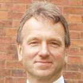

Mr Hayward had a long interest in patient safety and training. He has served as the Trust's Clinical Director for Ophthalmology and currently sits on the Trust's Serious Incident Committee. He has held the posts of Training Programme Director in Ophthalmology for the Yorkshire Deanery and Examiner for the Royal College of Ophthalmologists. Currently he is Chairman of the RCOphth Training Committee and an Associate Postgraduate Dean for the Yorkshire and Humber Deanery.